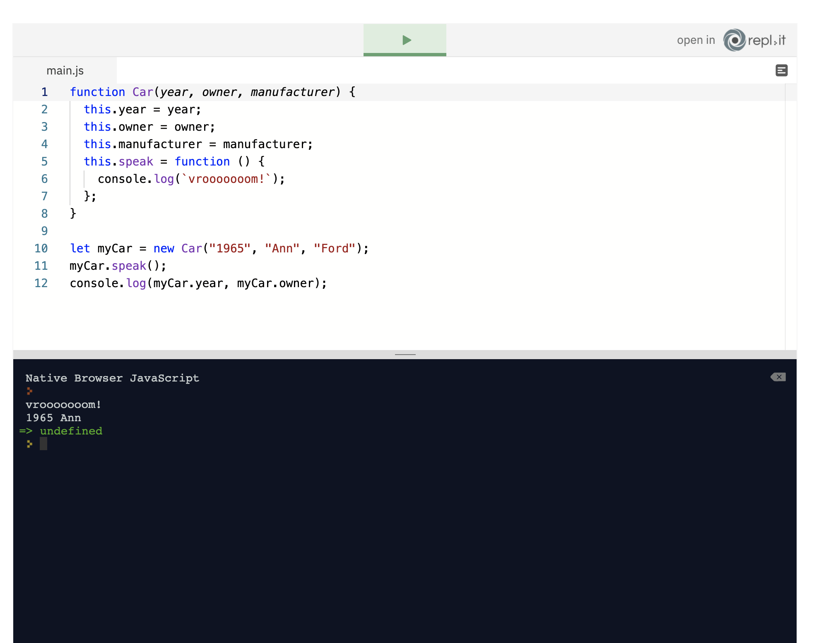
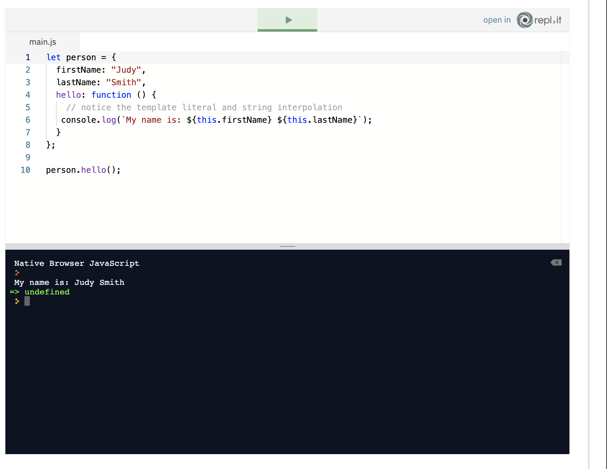
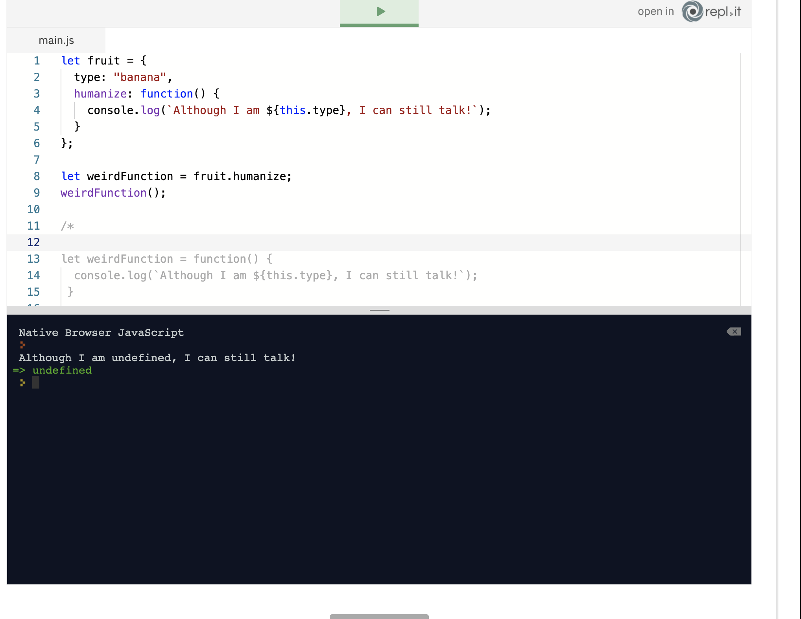
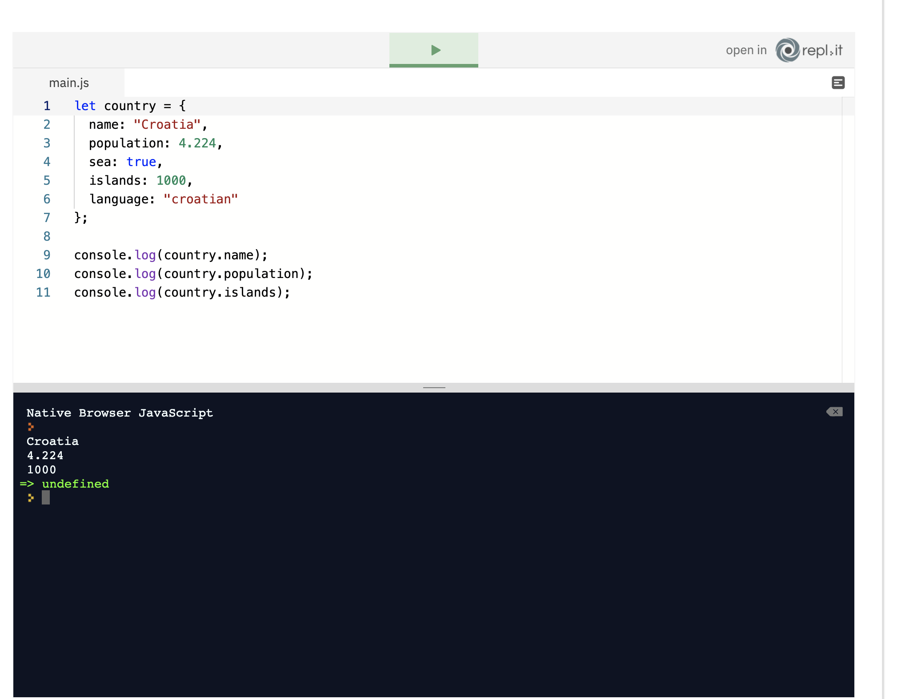
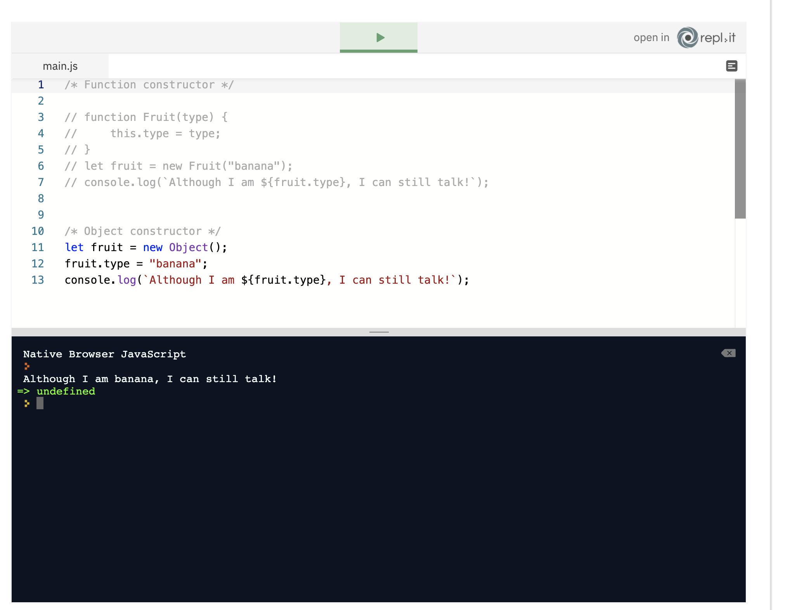
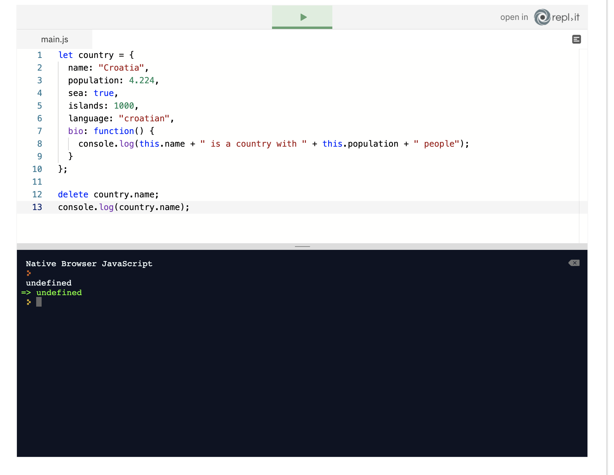
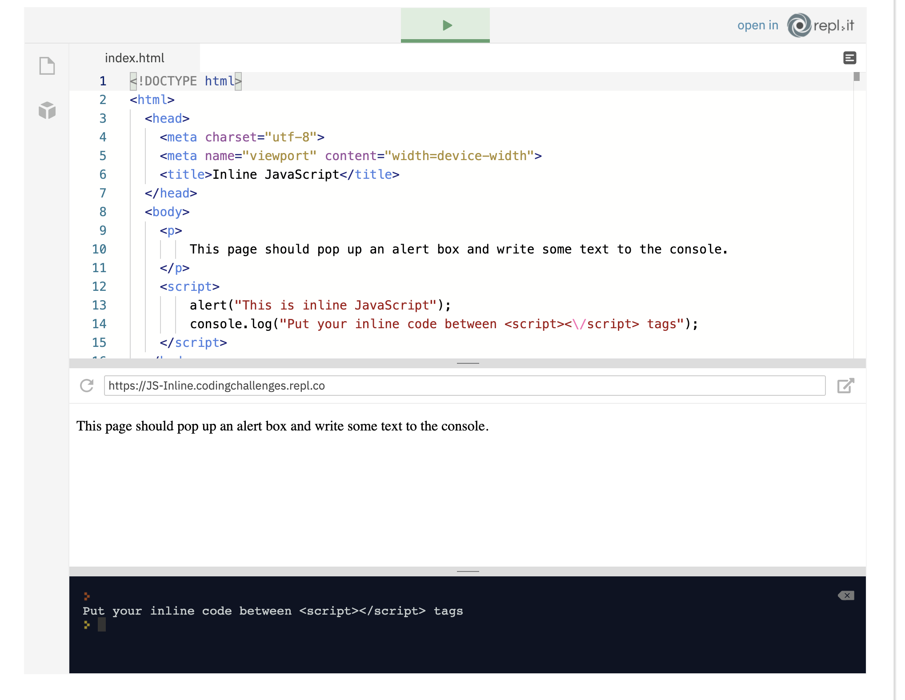
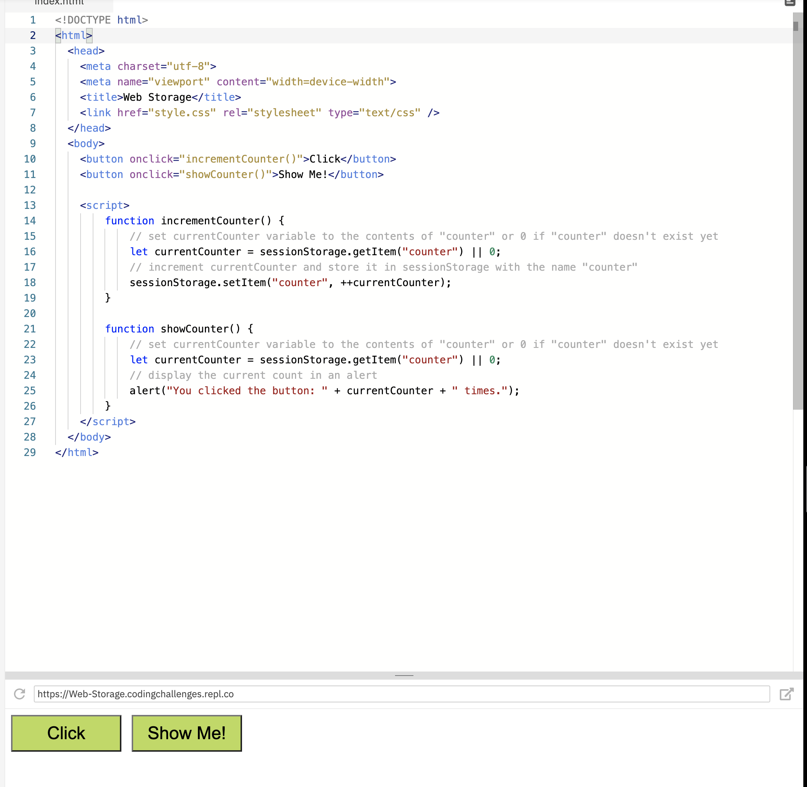

Are principles based on objects instead of the actions and data, it allows us to model the real world using objects.
objects are used to build javascript apps which model realit.
The first thing you need to know about the objects is that they are essential. If you want to build apps with JavaScript, you must know objects perfectly. You cannot be a JavaScript developer without using objects. So no pressure. Almost everything in JavaScript is an object whether you see it immediately or not. As we are going to show you, objects have data stored in key-value pairs. Objects are used to mimic things in the real world. You see something in the real world, and you want to code in JavaScript. Well, you better use objects! That fabulous car you are dreaming about can be written as a JavaScript object:

are a collection of related data, it can hold methods properties functions or even other objects
We can create objects by simply using a variable, name of the object and by assigning brackets {} to the variable.
Let’s take a look at an example. We are going to explain each line of code step by step.

On the first line, we created a variable named country and initialised it as an object with key-value pairs. The first key is name and its value is Croatia. The second key is population and it has value 4.224. Notice that each key-value pair is separated by a comma. The last key-value pair can have a trailing or hanging comma, but it’s not necessary. On the 7th line, we created a function named bio that shows a short bio of the object country. Don’t worry about the: this keyword yet. We will cover it later. The critical thing to notice is that JS objects can have functions themselves.

are a function that can be uses as an action for an object
they perform actions on the objects that they are defined in
uf we had for example an object named country and it was a method named bio we would use it like this
country.bio()
Let’s take a look. On the 7th line, we defined a bio function that shows the name of the country and its population. Then on the last line, we called the country.bio() method on the country object.

Notice that this function belongs only to the country object. It cannot be called like any other function. It has to be tied to an object. In the repl.it below we try and call it like bio() and the code throws an error.


is a way of creating an object
How do you use it? Create a variable and assign empty brackets to it. It will be an empty object, without any data
an example of an empty object
let country= {}
we can then add properties to the object literal
let country = {
name: "Croatia",
population: 4.224,
sea: true,
islands: 1000,
language: "croatian"
};
The object country has five properties. The first property has a key name and a value “Croatia”. Second has a key population and a value of a number. In every object key, which is also called a property name, is a string. Reserved keywords can be used as a key:
let country = {
for: 2,
var: "variable",
const: "constant"
};
A value can be of any data type: boolean, function, string, integer and even other objects.
is a way pf creatingan object we use it by using teh function keyword wiht a capitalized function name. Put the parameters in () and use them as arguments in the function body

The constructor function is still a JS function. It can pass parameters to arguments in the body. In our case, the parameters are a year, an owner and a manufacturer. In the body of the function, we use the this keyword. It helps us set these parameters as properties on an object. This references the current object, which is the Car. On the 5th line, we added a function speak() to an object Car. Therefore we can call speak on the Car object. Remember how we use length on the array and string object. We can call properties and object methods in the same manner. There are some differences in syntax between literal notation and function constructor when creating an object. Literal notation uses double colons while constructor uses equals sign = for defining properties. Constructor function uses the this keyword which references the current object when adding data to it. Literal notation doesn’t use this keyword for properties’ keys.
In the previous example, we just created an object Car. We didn’t use it. To use it, we need to instantiate it. That means we have to create an instance of our object. An instawhaaaat? Remember how we said that objects in JS mimic things in real life. We created an object named Car with a function constructor. In the parenthesis, some parameters are passed to the body of a function. Then the property owner will equal parameter owner; property name will be set to a parameter name and so on. But the big question here is how to set these parameters? How to create an instance of this object?
We did it on the tenth line in our code. We called the Car() function and added real values to it. The keyword new is necessary to instantiate the object. We assigned the newly created instance to a variable named myCar. Consequently myCar variable stores an instance of an object named Car with properties specific to myCar. Therefore our object that is stored in the myCar variable is an instance of the Car object. Also, we can call all of the methods and properties that Car object has on our instance.
But take note that we cannot call the method nor properties on the Car itself. It is only possible in the instances of the objects. After all, how can we call a function on another function? Also, Car object is just a function. A function constructor only pretends to be a class or an object. But it is, of course, a function, while myCar is an object:

The Car object is an abstract object from which all other cars can be created. They can be Ferrari, Porsche, Lamborghini, Rolls-Royce and so on. All these cars we use on a daily basis are instances of a Car object. They got their properties, name, owner, and manufacturer from the Car object. You can use instanceof operator to test whether some instance is an instance of some object:

updating property values and methods in the derive class
it updates property values and methods
there a simple override examples, you can override a function if you declare it again after original declaration
is a keyword in javascript it references the current object and we use it by simply using the this. keyword
So far we know that an object stores data. What if we want to reference that data from within the same object? How can we get to it? That is why we need the this keyword. If there is no this keyword, we will get a ReferenceError. JavaScript would not know that these two variables were already defined. It couldn’t get to them. If you want to reproduce the error, just remove the this keywords:
A JavaScript class is declared with a PascalCase in contrast to other JavaScript data structures:
It is the same as writing person.firstName and person.lastName. But what if someone changes the name of the object and forgets to update the code in the hello function? The this keyword makes sure that the correct data is shown even in that scenario.
If the this keyword is used to access data from the current object, then what would happen if we used it outside of an object?
If the this keyword is used to access data from the current object, then what would happen if we used it outside of an object?
In the previous lesson, we talked about the this keyword. We got to the global object. This time we are going to create an object with a function and a property named type. The humanize function lets our fruit talk. Wow, JS can do magic tricks! We’re gonna let the banana introduce itself by calling the function the same way we called function expressions. The first thing is to save it in the variable and then call it on the next line.
Whaaaaaat is that? Undefined?? Why is JS like that? But look at the commented out code. It shows you what is happening in the background. Our variable got a function as a value. The this keyword in that function no longer has any connection with the fruit object. That is because this is set when we execute the function, not when we define it. So again we got to the global object, not the fruit object as we wanted to. How can we fix it? The answer is the next lesson.
reading object values reads a value by using teh objects key, if you want to get the value from and object, you can find it by its key
You call the name of the property on the object by using dot notation: objectName.property. On the 9th line, we called the name property on the country object, and the result is string Croatia. On the next line, we called the population property again on the country object, and the result is an integer 4224. However you created an object, you can get its property with the dot notation:
example
The object constructor method in the above example is the third way you can create an object. If you have an object that has another object as a property, then you can use dot notation twice to get the property of the inner object:
updating the value and properties changing their values///
We can update properties, change their values. Use the same syntax:
objectName.propertyand assign the new value to it

a way of deleting an object property we achieve this by ussing the delete keyword along with the
objectName.property
Using the delete keyword will delete both, the key and the value:
javascript in a html allows us to run js in our html page we write it inbetween script tags
Up to this point, we have run JavaScript in repl.it console. Now, we want to look at how to integrate JavaScript with HTML. Much like CSS, JavaScript can be loaded from an external file or be embedded into our HTML file. We load JavaScript in HTML by using the tags. Any JavaScript that is not encapsulated in a function will be run as soon as it is loaded. In this lesson, we're first going to demonstrate how to write inline and external JavaScript, and then look at how to respond to events in HTML. The example below shows some simple inline JavaScript.
Similar to CSS, it is often better to load our scripts from external files. This means that we can use our script on multiple pages without having to copy and paste the entire code. It also means that we can use scripts from third-party providers such as jQuery, Materialize and Bootstrap. Keep in mind that JavaScript is often parsed in the order it is loaded. So, don't try to load a script that is dependent on jQuery before you have loaded jQuery itself! We still use the tags to load our external JavaScript files, but this time we need to supply the src attribute and the path to our file, or its URL. When you are creating your own JavaScript files, then it's good practice to put them in a folder or directory. Generally, we put them in a folder called js or scripts. The following code will load an external JavaScript file called script.js, which is located in the js folder: Explore the code in the following example, and open the script.js file. If you can't see the script.js file, click on the blank page icon at the top left of the code window to open the file explorer panel. You'll see that the code is exactly the same as the code in our previous lesson, but this time it is in an external file.
Actions that trigger events in HTML
What does it do? Allows us to call a JavaScript function when an event happens, such as clicking a button
how do we use it? By using the onclick attribute
What is a HTML event, and how can we use them? An event is something that is triggered by an action. This is the same in real-life too. For example, the action of stubbing your toe on a doorframe will cause the event of pain. How you choose to handle that event is up to you! Fortunately, the default events in HTML are less painful - every time you move the mouse pointer or click on a link - which is an action - an event is triggered. Again, though, how you choose to handle the event is up to you. We're going to focus on a common way of handling an event: calling a JavaScript function when a button is clicked. All of the default events in HTML start with on. So, logically, our click event is called onclick. We can supply this as an attribute to many HTML elements. To trigger a function called displayAlert() when a button is clicked, we could use this code: Explore the code in the following example, and see how each event does something different. We've kept this as inline JavaScript for ease of reading, but you would probably want to put this in an external file in your own projects.

The current context in which our JavaScript code runs
It allows us to allow or prevent our variables and functions from being accessed from other scripts.
How do you use it? : By being careful about where global variables and functions are created.
In our discussion on scope in the Function Scope lesson, we talked about how we try to avoid creating variables in the global scope. This becomes even more important when we are loading many different external scripts. Let's think for a moment about how JavaScript files are loaded in the browser. As we said in our previous lesson, we often load many different JavaScript files - or libraries - in one single project. If we were using Bootstrap, for example, we would need to load three different files before we even start writing our own custom JavaScript. The browser loads multiple JavaScript and multiple CSS files in a similar way. Effectively, it concatenates them into one big file in memory. There's much more to it than that, but this suffices as a simple explanation. As a result of this, functions in one JavaScript file can be available to others, which is how external libraries work. This is a very useful feature, but it means that we have to be careful when defining variables as the example below shows. Examine the code by clicking on the files icon, look at both the helpers.js and script.js files.
In our example above, we set two variables in helpers.js. We also have a function, which displays messages. In script.js we increment importantVariable and set the content of messageText before calling the displayMessages() function. Notice that the variables and the displayMessages() function are in a different script. We can access them because the browser views these two files as one big JavaScript file. In our example, though, we modify one variable and completely overwrite another. We can do this because all of our variables exist in the global scope. That means that they can be accessed, modified or even overwritten by any other script. As we said before, the important thing to remember is: avoid creating global variables where possible.
is a way of persisting data in the browser, It allows us to store data in the browser's built-in local storage.
we use it by using the methods of localStorage or sessionsStorage objects
As we said, we're trying to avoid using global variables in our projects. There are times, however, when it is useful to store data for later retrieval, and HTML5 introduced this feature. Let's think for a moment about what kind of data we might want to store. If we were writing a game, we might want to store the player's previous score. We could store the user's name or preferences so that we can give them a personal welcome when they visit the site. We don't have unlimited space, though. Depending on the browser, we have between 2Mb and 5Mb available. It's also not a place to store sensitive data, but as a temporary scratchpad to hold data, it works well. We're going to look at two types of storage: Local Storage and Session Storage. They are very similar - the main difference is that Local Storage is persistent. The data will remain after the browser has been closed down. Session Storage is temporary, the data is deleted when the browser tab is closed. To store an item, we use the setItem() method of either the localStorage or sessionStorage objects. It probably won't surprise you to guess that retrieving an item uses the getItem() method. Data is stored in Key / Value pairs. So, if we wanted to store the name "Zaphod Beeblebrox" in the browser, the key could be "name", and the value would be "Zaphod Beeblebrox". So, the code to save this into Local Storage would be: localStorage.setItem("name", "Zaphod Beeblebrox");. Similarly, to retrieve the name, we would write: localStorage.getItem("name");. Notice that we only need to supply the key when retrieving data. The code example below uses Session Storage, so the data will be deleted when we close the browser tab. Every time the Click button is pressed, it increments a counter. When the Show Me! button is pressed, it will display the counter in an alert.
To remove the item from storage, you can use the removeItem() method. If we wanted to wire up a Reset button in our example above, we would have put: sessionStorage.removeItem("counter"); in a separate function. Local and Session Storage are both very useful - especially when we don't have access to a database back-end to store data. They are also useful as a workaround if we need to store some data, but don't want to create global variables.